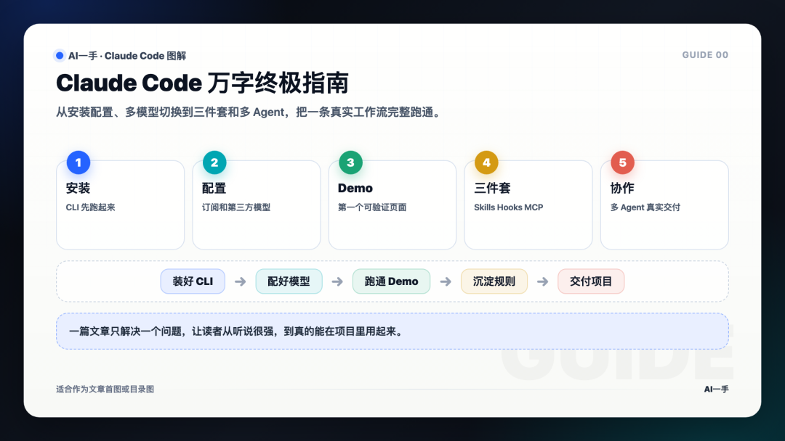
Claude Code 应该是 2026 年最值得学的 agent 工具。
你听说 Claude Code 很强，想学，但不知道从哪开始，或者装了不会用，或者用了但总觉得没发挥出它真正的能力。
我把市面上能找到的所有 Claude Code 教程都翻了一遍，发现要么只讲安装不讲实战，要么只讲功能不讲怎么跟其他模型配合，没有一篇是从头到尾全部打通的。
于是我希望这篇文章是全网最详细，看完这篇不用再找第二篇。
从装机到配置，从单模型到多模型一键切换（DeepSeek、Gemini、GPT 随便换，不影响你原来的 Claude 订阅），从基础命令到 Skills/Hooks/MCP 三件套，从单人操作到多 Agent 协作，从入门 Demo 到真实项目的五步工作流。一篇全覆盖，照着做就能跑通。
全文一万多字，13 个模块，建议电脑端阅读，收藏慢慢跟着操作。
先赞后看，腰缠万贯~
Claude Code 到底是个什么东西
在讲怎么装之前，先用 30 秒把认知对齐。
Claude Code 是 Anthropic 官方出的一个命令行工具。它跑在你电脑的终端里，能读你的文件、跑你的命令、调模型帮你干活。注意，它不是网页版 Claude 的复刻，不是 IDE 插件，是一个独立的 Agent 客户端。
你可以把它想象成一个刚入职的员工。能力很强，执行力顶尖，但需要你给他三样东西。
第一，门禁卡。也就是 API Key 或者订阅账号，证明他有权限调用模型。
第二，工位。一个你用 IDE 打开的项目文件夹，他在这个文件夹里干活。
第三，第一个任务。你在终端里输入的那条 Prompt。
这个员工有个特点。你交代清楚，他干得又快又好。你交代不清楚，他也会干完，但交出来的东西不一定是你想要的。
所以这篇教程的核心逻辑就是，教你怎么把事情交代清楚，让这个员工帮你把活干漂亮。
我平常都是喜欢用这个命令：claude --dangerously-skip-permissions
来直接进入Claude code，简单粗暴。
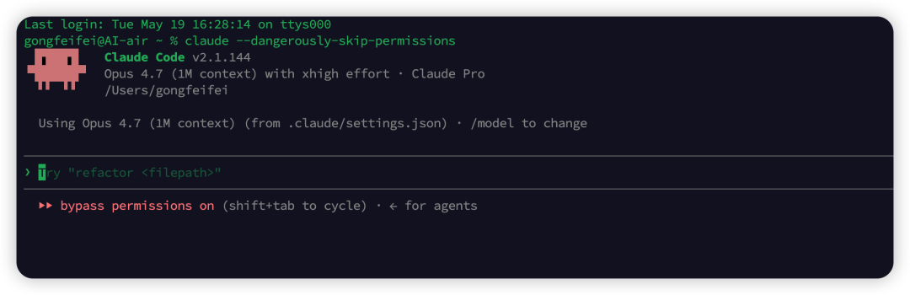
Part 1 安装，比你想的简单
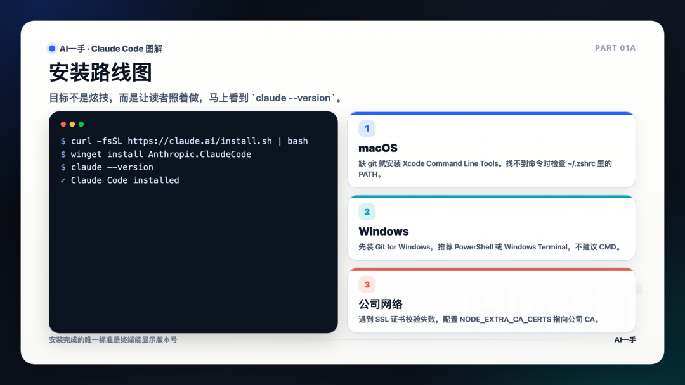
1. 一行命令装好它
macOS 和 Linux 用户，打开终端，粘这一行
curl -fsSL https://claude.ai/install.sh | bash
Windows 用户，用管理员权限打开 PowerShell，粘这一行
winget install Anthropic.ClaudeCode
跑完之后，终端里输入 claude --version，能看到版本号就说明装好了。
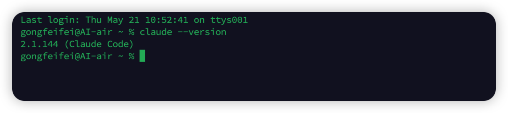
就这么简单。没有复杂的 IDE 配置，没有插件冲突，没有环境变量折腾半天。
如果你是 macOS 用 Homebrew 的，也可以用 brew install --cask claude-code，效果一样。
2. 各平台踩坑提前避
装的过程大部分人都顺利，但还是有几个常见的坑提前说一下。
macOS 用户
如果终端提示找不到 git，说明你没装 Xcode Command Line Tools。终端跑一下 xcode-select --install，弹窗点安装，等几分钟就好。
装完之后如果输入 claude 提示 command not found，大概率是 PATH 的问题。检查一下你的 ~/.zshrc 里有没有这一行
export PATH="$HOME/.local/bin:$PATH"
没有就加上，然后跑 source ~/.zshrc 或者重开终端。
Windows 用户
先确保装了 Git for Windows。Claude Code 内部用 Git Bash 跑命令，没有 Git 它启动不起来。
推荐用 Windows Terminal 或者 PowerShell，不要用 CMD。如果你习惯用 WSL，可以直接在 WSL 里装 Linux 版的 Claude Code，体验和原生 Linux 一样。
有些公司的杀毒软件会拦截下载。遇到这种情况用 winget install Anthropic.ClaudeCode，WinGet 走的是微软官方渠道，杀毒软件一般不拦。注意 WinGet 装的版本不会自动更新，隔一阵手动跑一次 winget upgrade Anthropic.ClaudeCode。
还有一个通用的坑
如果你在公司网络，可能会遇到 SSL 证书验证失败的报错（UNABLE_TO_VERIFY_LEAF_SIGNATURE）。这是因为公司网络有中间人证书。找 IT 要公司的 CA 证书文件，然后设置环境变量
export NODE_EXTRA_CA_CERTS=/path/to/company-ca.pem
3. 五种使用方式，我推荐终端 + IDE
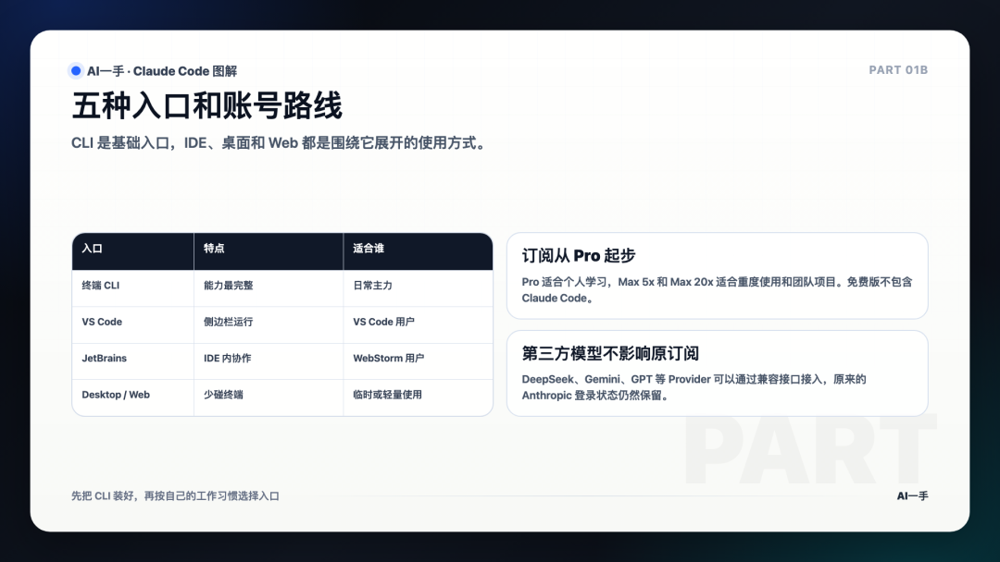
Claude Code 有五种用法
因为我是程序员，所以我自己的用法是终端 CLI + IDE 配合。
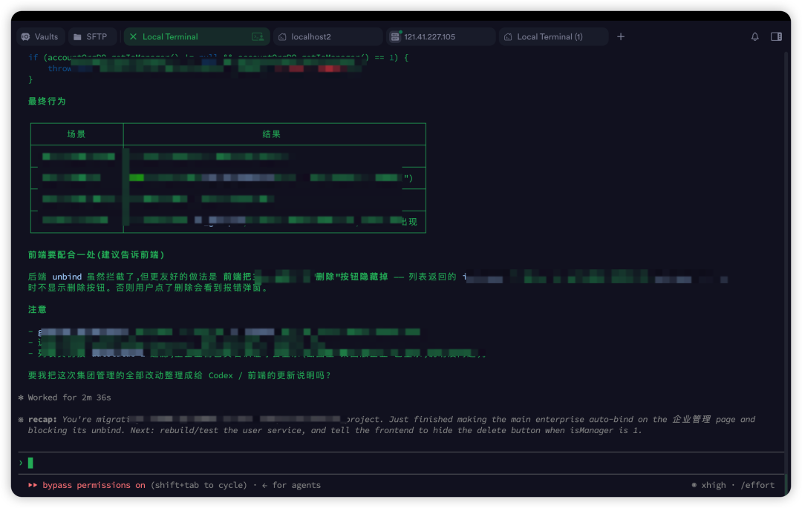
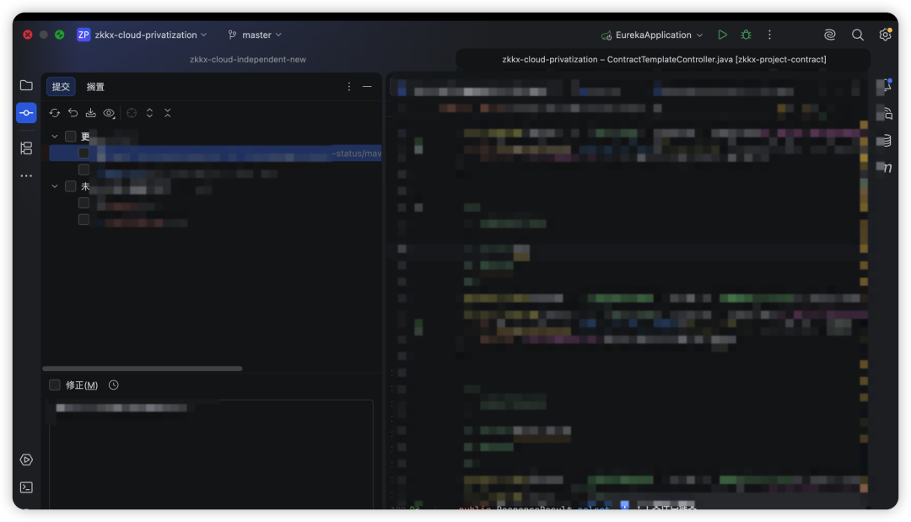
上面命令行是Claude code 改动代码的地方，下面是ide里面非常直观的看到你改的代码的变更，前提是你的代码目录里面有git。
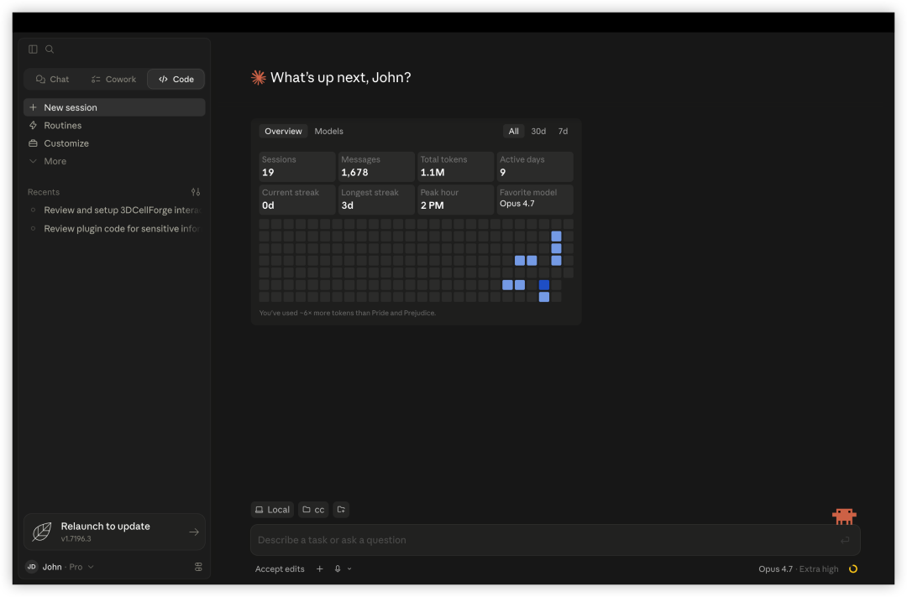
如果你不是程序员，日常工作非coding的话， 你就直接用desktop app。但是你用这个的话，真正你能用上的其实是cowork，这个就不在文章里面做介绍，有机会可以另写一篇。
不管你选哪种方式，都建议先把 CLI 装好。CLI 是基础，其他方式都依赖它。
4. 账号和订阅
Claude Code 需要 Anthropic 账号。第一次启动 claude 的时候会自动弹浏览器让你登录。
订阅分三档
注意，claude.ai 的免费版不包含 Claude Code，至少需要 Pro 订阅。先从 Pro 开始就行，用几天你自然知道够不够。我个人使用目前是pro，pro的额度用量其实还是非常紧张的， 因为pro额度在
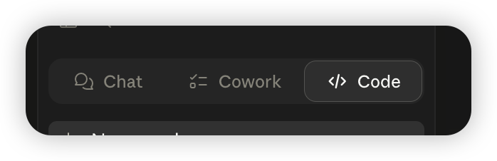
这3个场景下都是会消耗额度的，跟ChatGPT不一样，ChatGPT的对话是不消耗codex的额度。
还有这里有个很多人不知道的事。Claude Code 除了用 Anthropic 原生订阅，还可以接入第三方模型。比如说你可以用 DeepSeek 的 API 来驱动 Claude Code，或者 GLM 5.1 模型，它们的成本低很多，而且不影响你原来的 Claude 订阅状态。
这个是接下来重点要讲的。
Part 2 配置，三条路线你选一条
Claude Code 要跑起来，需要知道三件事。去哪个服务器找模型（Endpoint），用什么身份（API Key），让谁干活（Model Name）。
我把配置路线分成三条，你按自己的情况选。
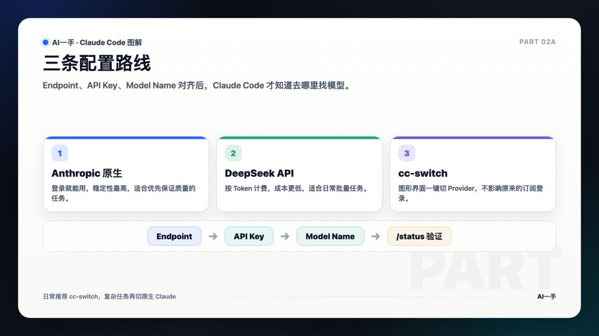
路线一 Anthropic 原生订阅（最稳定）
如果你已经有 Anthropic 的 Pro 或 Max 订阅，这是最简单的路线。
第一次启动 claude 的时候，它会自动引导你在浏览器里登录 Anthropic 账号。登录成功后，终端里直接就能用了，不需要配置任何环境变量。
默认模型是 Claude Sonnet 4.6，
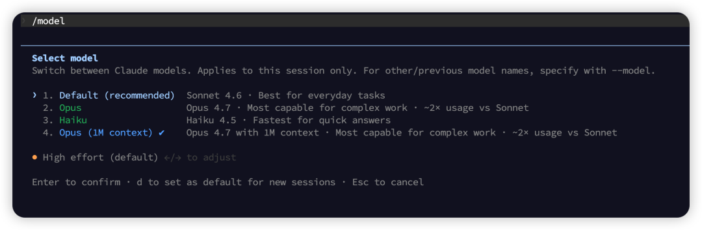
可以随时用 /model 命令切换到 Opus 4.7（2026 年 4 月发布的最新旗舰）或 Haiku 4.5。并且目前最新的 Opus 4.7 模型现在支持1M 上下文了，如果你的项目是比较大的，可以用这个来进行工作。
这条路线的优势是稳定性和模型质量最高，缺点是价格最贵。
路线二 第三方模型，比如DeepSeek API或者GLM 5.1等（性价比最高）
2026 年 DeepSeek v4 出来了，并且直接提供了 Anthropic 协议兼容的 API 入口，配置起来很方便。
macOS / Linux / WSL 用户，打开终端，把下面这组环境变量粘进去
export ANTHROPIC_BASE_URL=https://api.deepseek.com/anthropic
export ANTHROPIC_AUTH_TOKEN=<替换成你的 DeepSeek API Key>
export ANTHROPIC_MODEL=deepseek-v4-pro
export ANTHROPIC_DEFAULT_OPUS_MODEL=deepseek-v4-pro
export ANTHROPIC_DEFAULT_SONNET_MODEL=deepseek-v4-pro
export ANTHROPIC_DEFAULT_HAIKU_MODEL=deepseek-v4-flash
export CLAUDE_CODE_SUBAGENT_MODEL=deepseek-v4-flash
Windows PowerShell 用户，把 export 换成 $env:变量名="值" 的格式
$env:ANTHROPIC_BASE_URL="https://api.deepseek.com/anthropic"
$env:ANTHROPIC_AUTH_TOKEN="你的 DeepSeek API Key"
$env:ANTHROPIC_MODEL="deepseek-v4-pro"
$env:ANTHROPIC_DEFAULT_OPUS_MODEL="deepseek-v4-pro"
$env:ANTHROPIC_DEFAULT_SONNET_MODEL="deepseek-v4-pro"
$env:ANTHROPIC_DEFAULT_HAIKU_MODEL="deepseek-v4-flash"
$env:CLAUDE_CODE_SUBAGENT_MODEL="deepseek-v4-flash"
逐项解释一下
ANTHROPIC_BASE_URL指向 DeepSeek 的 Anthropic 兼容入口ANTHROPIC_AUTH_TOKEN你在 DeepSeek Platform 创建的 API Key，注意把尖括号也删掉ANTHROPIC_MODEL主会话默认用哪个模型后面几个 DEFAULT_xxx_MODEL是把 Claude Code 内部的 Opus/Sonnet/Haiku 档位映射到 DeepSeek 的模型上CLAUDE_CODE_SUBAGENT_MODEL子代理用的模型，用 flash 更省
有一点很重要。这些环境变量只在当前终端窗口生效。你关掉终端重开，就要重新设置。
如果你想永久生效，把这些 export 语句写进 ~/.zshrc（macOS）或 ~/.bashrc（Linux）文件的末尾，保存后跑一下 source ~/.zshrc。
配好之后启动 claude，输入 /model，确认显示的是 deepseek-v4-pro。
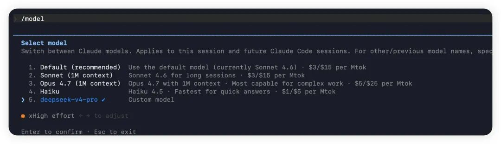
路线三 cc-switch（多模型一键切换，强烈推荐）
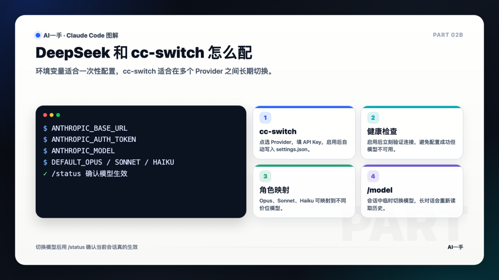
前两条路线都有一个问题，切换模型的时候需要手动改环境变量或配置文件，很麻烦。
cc-switch 是一个开源的图形化工具，专门解决这个问题。装好之后，你想用 DeepSeek 就点 DeepSeek，想切回 Claude 就点 Claude，想试试 Gemini 就点 Gemini。它自动帮你改 ~/.claude/settings.json，你什么都不用管。
而且重点来了。用 cc-switch 切换到第三方模型的时候，完全不影响你的 Anthropic 登录状态。你的 Pro/Max 订阅还在，随时可以切回来用原生 Claude。
安装方法
macOS 用 Homebrew
brew tap farion1231/ccswitch
brew install --cask cc-switch
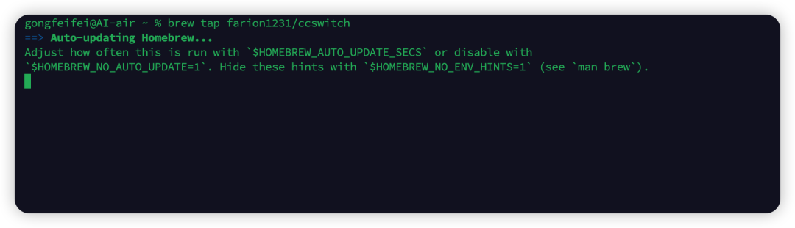
注意这个会有点卡住，不要急，等一下就好了。
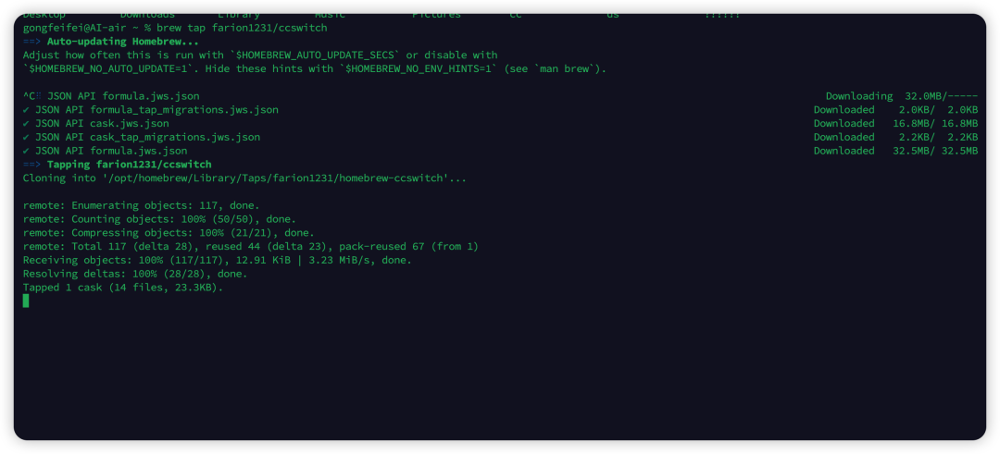
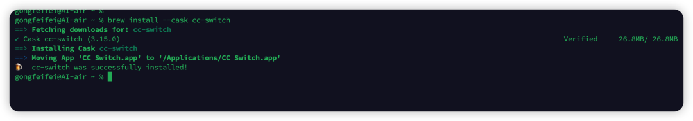
紧接着执行brew install --cask cc-switch安装成功。
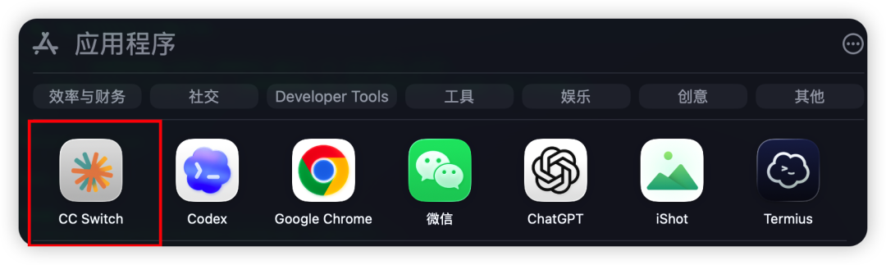
然后Windows 用户去 GitHub Releases 页面下载安装包
https://github.com/farion1231/cc-switch/releases
下载 CC-Switch-vX.X.X-Windows.msi 或者便携版 zip 都行。
使用方法
打开 cc-switch 应用，首次启动会自动检测你已经装好的 Claude Code 点右上角的 +号，从内置预设中选择模型提供商（DeepSeek、OpenAI、Gemini、阿里百炼、智谱等几十个都有）填入你的 API Key 在列表中点击你要用的 Provider，点「启用」，配置自动写入 点旁边的「健康检查」按钮验证连接是否正常
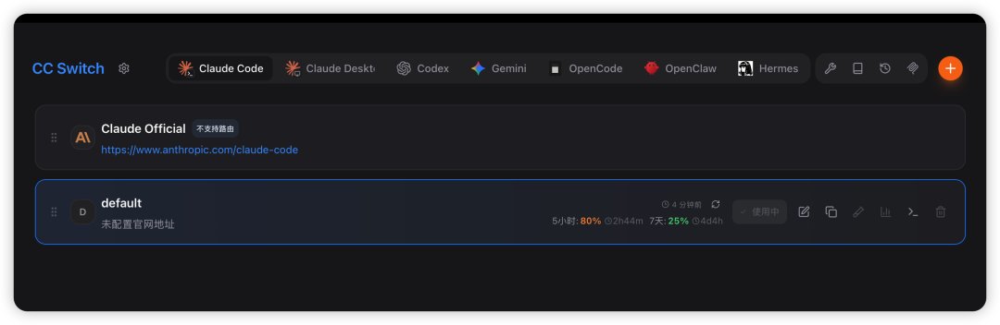
注意我首次打开是这样的节目，支持多个客户端的模型切换，第一个是Claude code也就是我们今天要做的切换。
它连接的是第二个，你不要疑惑为什么没有用第一个，这是正常的，我现在Claude code连的就是官方直连的。
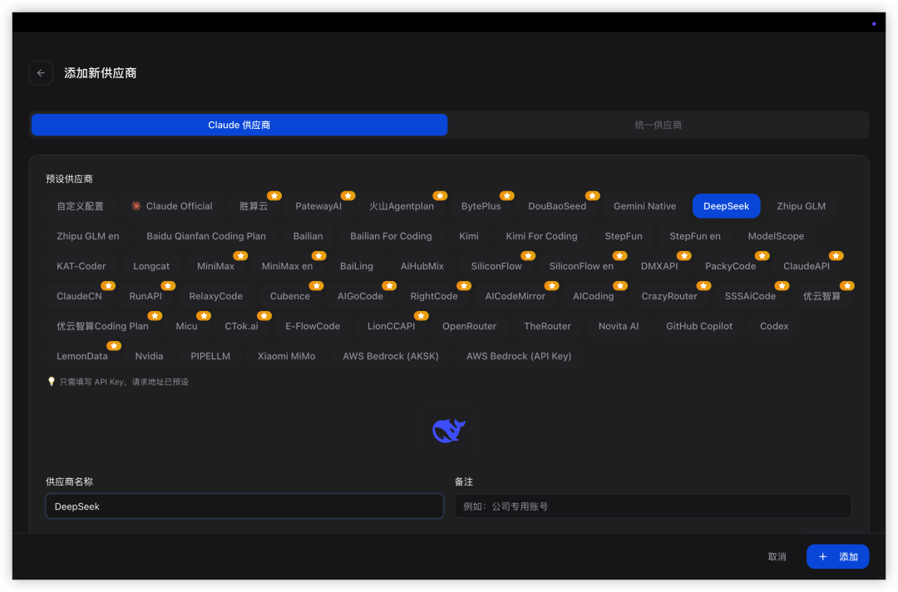
点击+号添加你的第三方模型，这里我用DeepSeek作为演示；
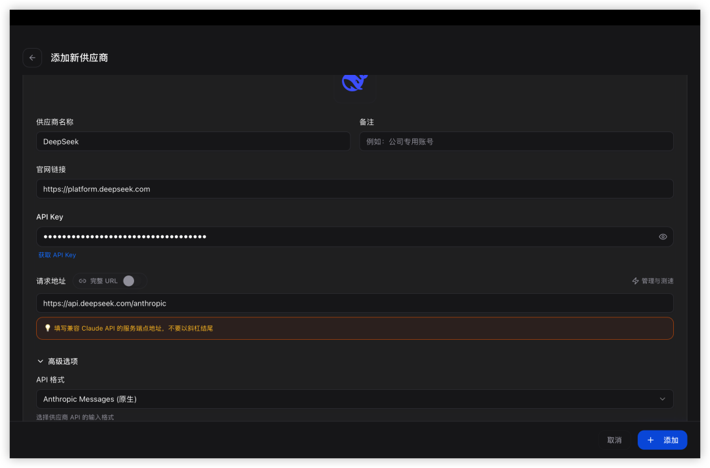
填好你的DeepSeek 的API，其他的都不用你填，都帮你贴心的写好了。
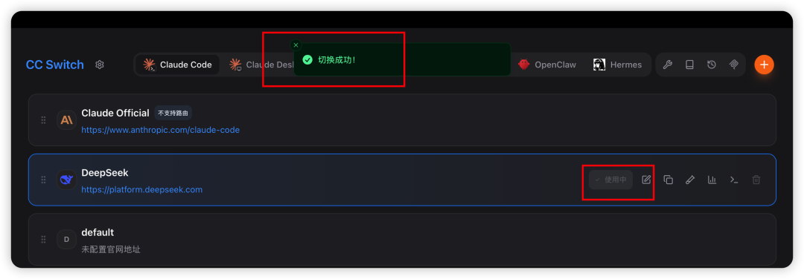
启用就可以了。
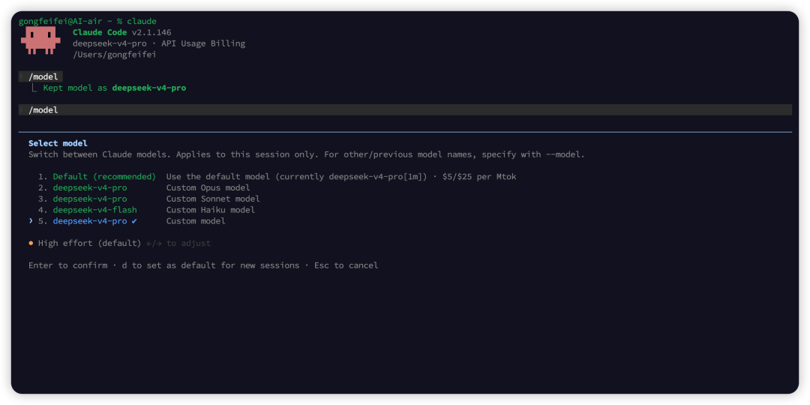
然后去命令行验证一下就行了，这边成功切换成功，没有运行之前的那些繁杂的命令。不想用了，就再次切换到原来的那个官方的
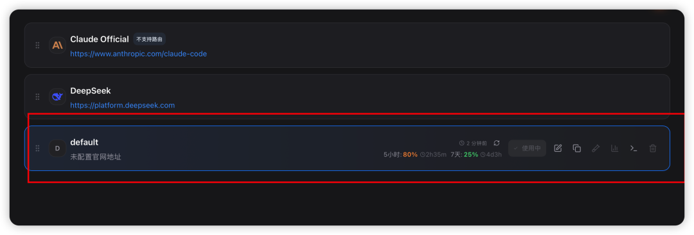
默认选项就行了。
cc-switch 的最新版本（v3.15.0）支持 44 个预设 Provider，基本涵盖了市面上所有主流模型。它还支持角色映射，也就是你可以把 Opus 映射到某个高端模型，Haiku 映射到某个轻量模型，Sonnet 映射到某个中端模型。
用 /model 命令运行时切换
除了 cc-switch 这种全局切换，Claude Code 本身也支持运行时切换模型。
在对话里输入 /model，会弹出模型选择器。你也可以直接 /model claude-sonnet-4-6 这样指定模型名。
不过要注意，/model 切换模型会重新读取整个对话历史，如果你在一个很长的对话中途切换，可能会消耗不少 Token。
三条路线对比
推荐的做法是 cc-switch 装好，里面配两三个常用 Provider。日常用 DeepSeek 省钱，遇到特别复杂的任务切 Claude Opus，偶尔试试 Gemini 的超长上下文。切换就是点一下的事。
Part 3 第一次跑通，验证 + 第一个 Demo
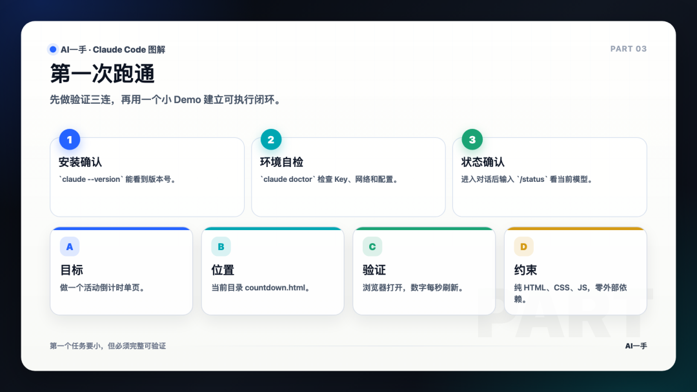
验证三连
配完之后别急着干活，先做三个检查。
第一个，确认安装
claude --version
能看到版本号就行。
第二个，环境自检
claude doctor
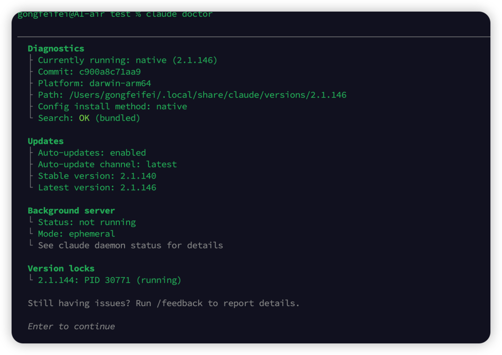
这个命令会检查环境变量有没有生效、API Key 能不能用、网络通不通。如果报错，大部分是 Key 没贴对或者 BASE_URL 拼错了。
第三个，启动 Claude Code 后检查配置
claude
进入对话后输入
/status
核心看 Model 那一栏，显示的应该是你配置的模型名。
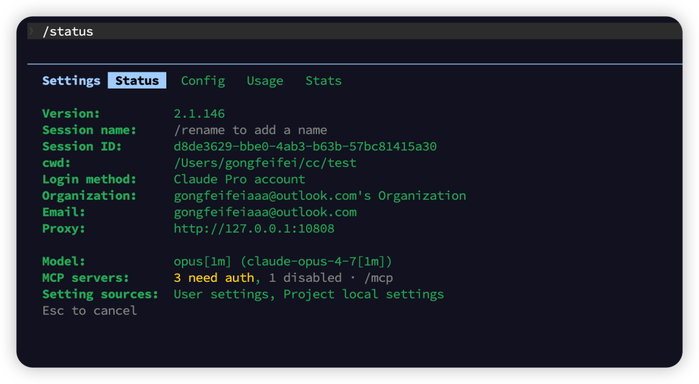
三个都过了，可以开始干活了。
第一个 Demo，做一个个人介绍页面
你的第一个任务做一件小但完整的事。做一个倒计时网页。
先建一个工作区文件夹
mkdir claude-first-demo && cd claude-first-demo
如果你用 IDE（Trae、Cursor、idea 都行），用 IDE 打开这个文件夹，然后在 IDE 底部的终端里启动 claude。
启动之后，在对话框里粘这段 Prompt
目标：做一个活动倒计时单页，页面中央显示距离 2026 年 7 月 1 日还有多少天、多少小时、多少分钟、多少秒，每秒自动刷新。背景用深色渐变，数字用大号白色字体。
位置：当前目录下，文件名 countdown.html，所有 CSS 和 JS 写在同一个 HTML 文件里，零外部依赖。
验证：浏览器打开能看到倒计时在跳动，没有控制台报错。
约束：不要引入任何 CDN 或外部库，纯原生 HTML + CSS + JS。
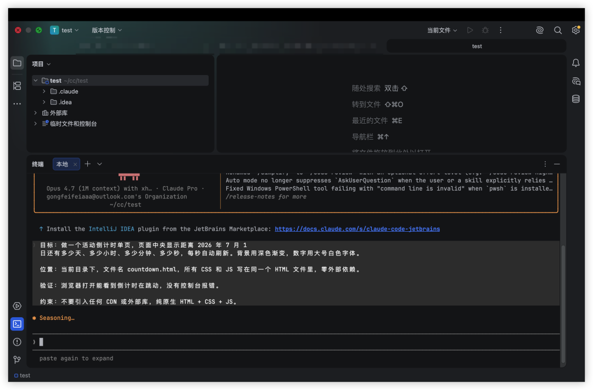
提交之后注意看它怎么干活。它会先告诉你它打算做什么（规划），然后开始建文件（执行），写完之后会让你验证（自检）。
打开 countdown.html，你的第一个 Claude Code 作品就在浏览器里了。倒计时的数字应该在一秒一秒地跳。
记一下刚才那条 Prompt 的结构。目标、位置、验证、约束。这四项后面会经常用到，我管它叫「四件套 Prompt」。
好的 Prompt 不是在跟 AI 聊天，是在给 AI 写工单。
Part 4 核心用法，让 Claude Code 听懂你说的话
装好了，也跑通了。但要真正用好 Claude Code，你得理解它的几个核心机制。
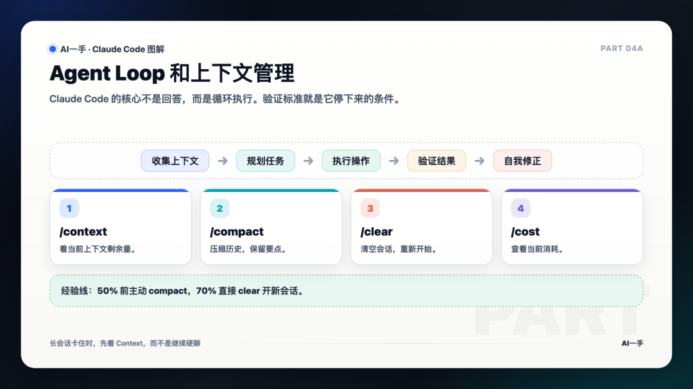
Agent Loop，它干活的方式
Claude Code 不是问答工具，是循环工具。
你给它一个任务，它会跑一个循环。收集上下文（读文件、看目录）→ 规划任务（拆步骤、排顺序）→ 执行操作（建文件、改代码、跑命令）→ 验证结果（跑一下、看输出）→ 自我纠正（如果验证不过，回去重新规划）。
这个循环可能转几十圈才停下来。它不是「你问一句它答一句」，是「接到任务就开始转，转到完成或者撞墙才停」。
理解了这一点，你就知道为什么 Prompt 要按「目标、位置、验证、约束」写了。你给的验证标准，就是这个循环的停止条件。没有明确的停止条件，它就会一直转，改来改去。
上下文管理，它的记忆是有限的
这个员工记忆短。
Claude Code 的「记忆」叫 Context，你一次告诉他的所有事、给他看的所有文件、跑过的所有命令，都堆在 Context 里。Context 不是无限的。撑爆了，他会开始忘事。
四个命令必须记住
/context 看当前 Context 还剩多少
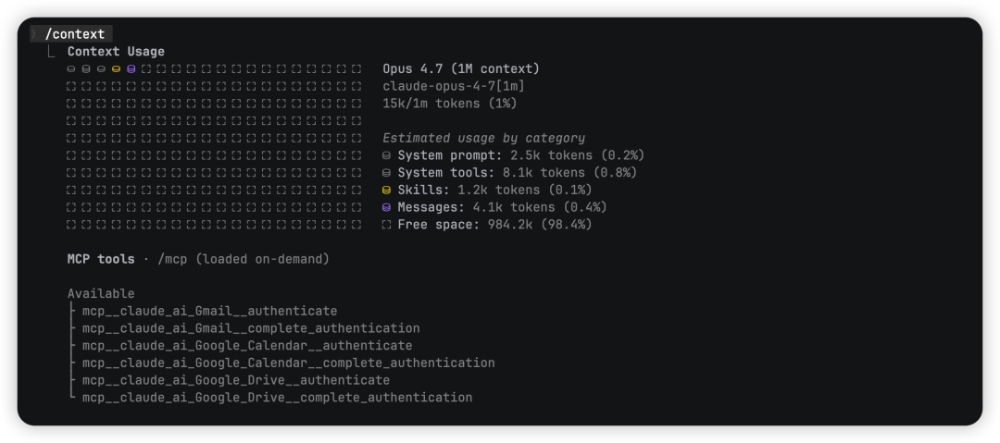
看第三行那个15k/1m就行了，代表1m的上下文用了15K，1%的比例。
/clear 清空当前会话，从零开始。这一条比你想的更常用
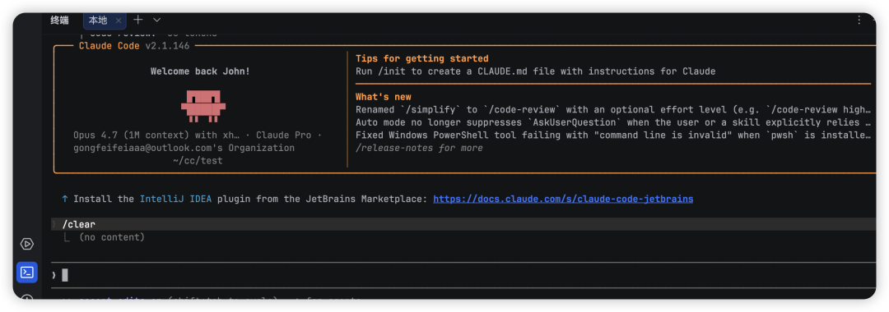
/compact 不清空，但让 Claude 把当前会话内容压缩一下，保留要点丢掉细节
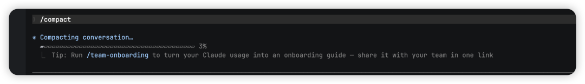
/cost 看到目前为止这个会话大概消耗了多少
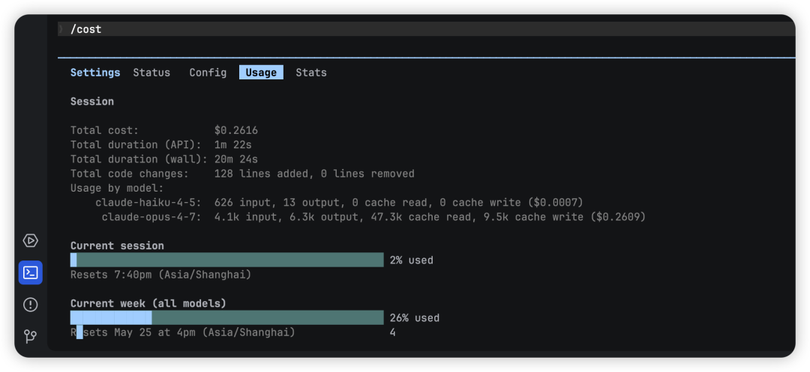
经验法则是这样的。Token 用到 50% 之前主动 /compact，用到 70% 直接 /clear 起新会话。
很多人卡住的根本原因不是 Prompt 不好，是会话开太久了，Claude 在前面的历史包袱里转不出来。
新会话 + 好 Prompt，远比长会话 + 反复修正要高效。
权限模式
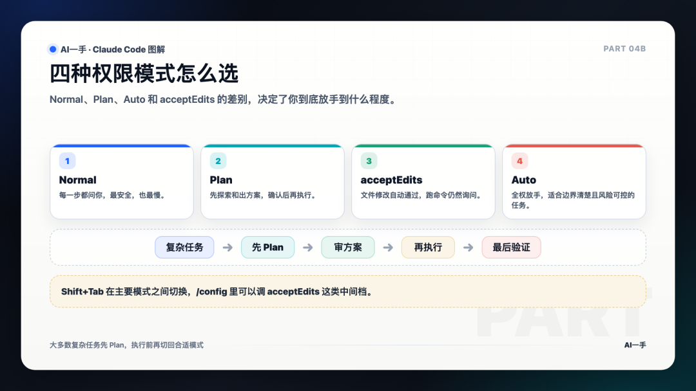
按 Shift+Tab 可以在主要模式之间循环切换
Normal Mode（默认） 每一步操作都问你要不要执行。最安全，最慢。
Plan Mode（计划模式） 先讨论方案，你点同意才动手。这是真正的主力模式。
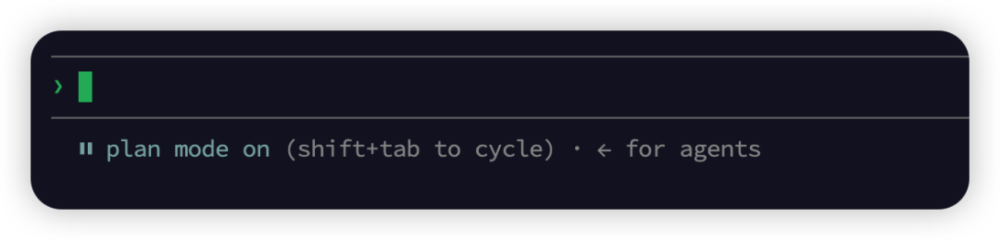
Auto Mode（自动模式） 全权放手，看到什么干什么，不问你。最快，但要确保任务描述清晰。
自动模式目前只有Team Plan 用户才有。
还有一个很多人不知道的中间档。acceptEdits 模式，Claude 修改文件自动通过，但跑命令还是会问你。适合你信任它写代码但不想让它随便 rm -rf 的场景。在 /config 里可以切换到这个模式。
大多数时间建议用 Plan Mode。Auto Mode 只在「一切都讲清楚了 + 最坏结果可控」的场景下用。
Plan Mode 是最重要的模式，单独讲
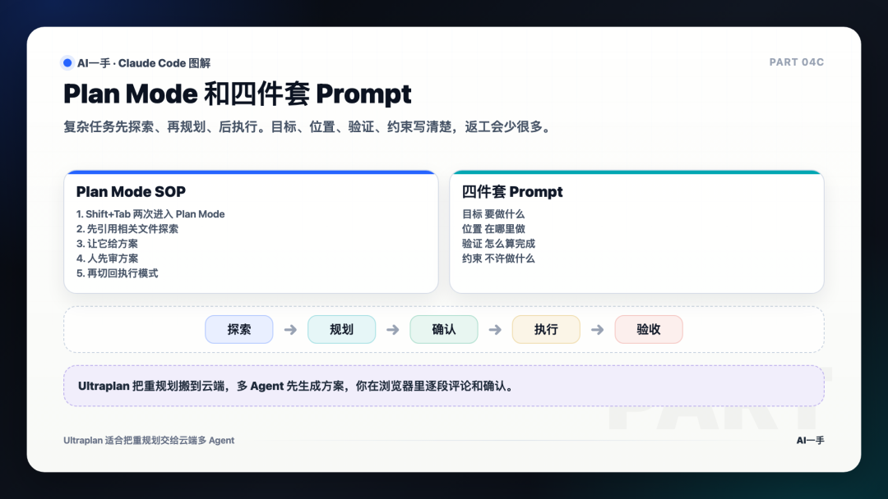
按 Shift+Tab 两次进入 Plan Mode。
进去之后，Claude Code 的工作流变成三步。先探索（读文件、看代码、搞清楚现状），再规划（写方案，告诉你打算怎么做），最后等你确认了才执行。
这里有一个反直觉的点。
Plan 阶段占 90% 的时间，执行阶段几乎一次过。
很多人用 Claude Code 的方式是先扔一个粗糙 Prompt，看它干出什么，不行再让它改。这种方式不是不能用，但代价是反复跑、反复改、反复偏。
Plan Mode 的逻辑反过来，把思考前置。你和它在动手之前先对齐「做什么、按什么顺序、最坏情况怎么办」，对齐完了再放它去跑。
前置 5 分钟讨论方案，省后面 30 分钟反复改。
Plan Mode 实操 SOP
Shift+Tab两次进入 Plan Mode用四件套 Prompt 描述任务（目标、位置、验证、约束） 用 @引用相关文件让它先探索，看它的理解对不对让它出方案，检查方案里有没有跟你想象不一致的地方 方案对齐了，切回 Normal Mode 或 Auto Mode 放它执行
Ultraplan，Plan Mode 的云端升级版
Plan Mode 有一个问题。Claude 在你的终端里规划方案的时候，终端被占着，你干不了别的。
Ultraplan 把规划这件事搬到了云端。输入 /ultraplan，Claude 会把任务交给云端的多 Agent 去规划，你的终端立刻释放出来，可以继续写代码或者处理其他事。
规划完了之后你在浏览器里打开，界面上可以逐段评论、加 emoji 反馈、要求修改某个部分。确认后有三个选择。在当前会话执行，开一个新会话执行，或者先存成文件以后再说。
/ultraplan 把当前项目的用户认证模块从 session 迁移到 JWT，
要兼容现有的 API 接口，不能让前端改调用方式
有三种方式触发 Ultraplan。
1、直接用 /ultraplan 命令，
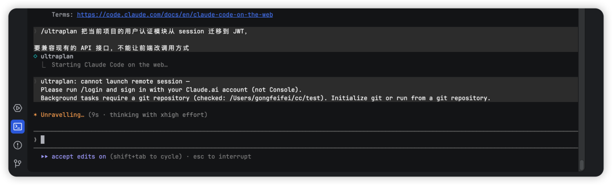
2、在普通 Prompt 里加上 ultraplan 这个关键词，
3、在 Plan Mode 生成方案后选择「用 Ultraplan 在云端细化」。
Pro 和 Max 用户可用。注意用第三方 API（比如 DeepSeek）的时候不支持 Ultraplan，因为它需要跑在 Anthropic 的云端基础设施上。
四件套 Prompt
每次给 Claude Code 布置任务，用这四项
目标 你要它干什么位置 在哪里干、文件叫什么、目录结构怎么放验证 怎么判断干完了，最好给一条可执行的验收标准约束 不许做什么、不许用什么、必须避开什么
模板
目标：[一句话说清楚要做什么]
位置：[文件路径或目录结构]
验证：[做完之后怎么确认完成]
约束：[禁止事项 + 风格要求 + 依赖范围]
你少写的每一项，Claude 都会替你做一个默认假设。这些默认假设的总和，就是你最后不满意的那个版本。
五个高频输入技巧
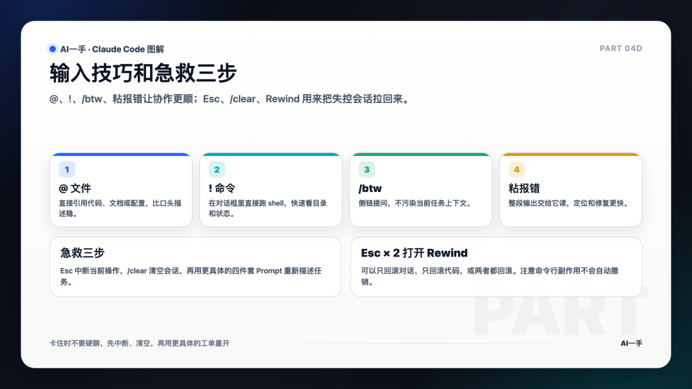
@，会弹出文件选择器。直接把文件甩给 Claude 读，比你用文字描述文件内容稳得多。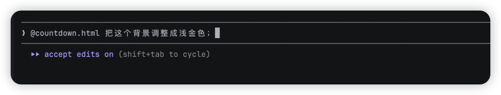
! 跑 shell 在对话框开头输入 !，后面跟一条命令，Claude Code 直接帮你执行。比如 !ls 看当前目录、!git status 看 Git 状态。
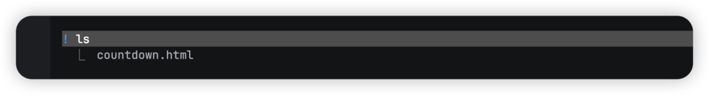
/btw 侧链提问 你正在让 Claude 改一段代码，突然想问一个不相关的问题（但又不想污染当前的对话上下文。输入 /btw 加你的问题，Claude 会回答你，但不会把这段问答算进当前任务的上下文里。问完继续原来的工作，完全不受影响。
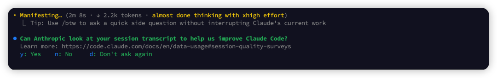
双击esc 当你在Claude code里面输入日志等很多信息的时候，你想全部删除，这个时候如果你一直按回车键会崩溃的，直接双击esc就行了。
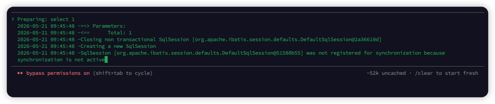
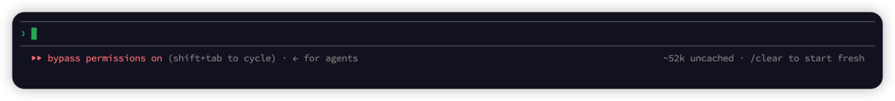
粘报错 代码跑挂了、命令报错了，把终端输出整段粘进对话框，加一句「修一下」。Claude 会读报错、定位文件、改代码。大多数情况下比你自己 Google 快。
急救三步
Claude Code 用到一定阶段一定会卡。卡在长循环里出不来、卡在错误代码里改不对。
急救三步，抄就行
Esc中断当前操作（不是 Ctrl+C，Esc 是 Claude Code 推荐的软中断）/clear清空会话重新描述任务，这次写得更具体
按两次 Esc 会打开 Rewind 菜单。注意这里跟刚刚说的按两次不一样的是输入框是空的情况下，弹出 rewind 菜单：
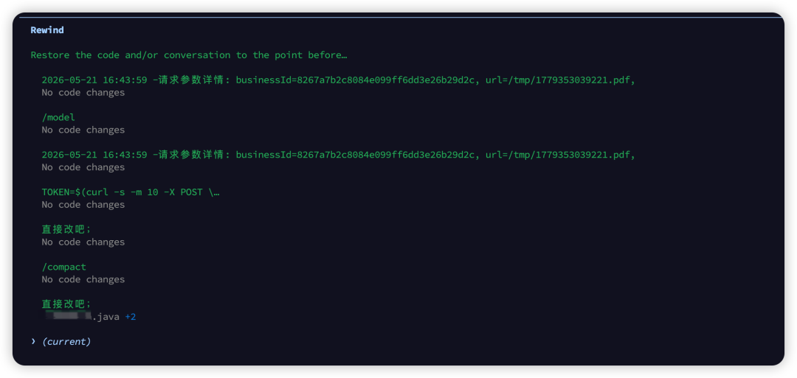
这个菜单给你三个选择。
只回滚对话 Claude 忘掉刚才说的那些，但文件改动保留。适合 Claude 的方案不对但改的代码还能用的情况。
只回滚代码 文件恢复原样，但对话历史保留。适合改动搞砸了但你想让 Claude 记住之前的讨论。
两者都回滚 代码和对话一起回到之前的状态。最干净的重来方式。
这套机制叫 Checkpoints。Claude Code 在每次修改文件之前会自动创建一个快照，你可以回到任何一个历史快照。但有一个坑要注意，bash 命令的副作用不会被追踪。如果 Claude 跑了一个 npm install 装了新依赖，回滚代码不会帮你把依赖卸掉。文件层面的改动可以完美回滚，但命令行产生的外部影响需要你自己处理。
比如你选择某个历史节点，这个节点没有代码更改，然后再去选择回滚类型
1. Restore conversation
恢复对话到你选中的这个节点。
2. Summarize from here
从这个节点开始，把后面的对话总结出来。
3. Summarize up to here
总结到这个节点为止。
4. Never mind
取消。
不做任何操作。
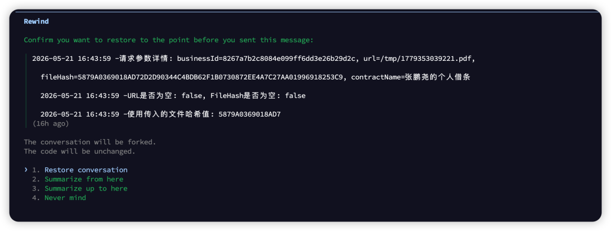
90% 的卡死，急救三步都能解决。真搞砸了，Rewind 兜底。
Part 5 CLAUDE.md，给 Claude 一份永久记忆
Context 是短期记忆，会被压缩、会丢失。CLAUDE.md 是长期记忆，每次启动都会重新读取。
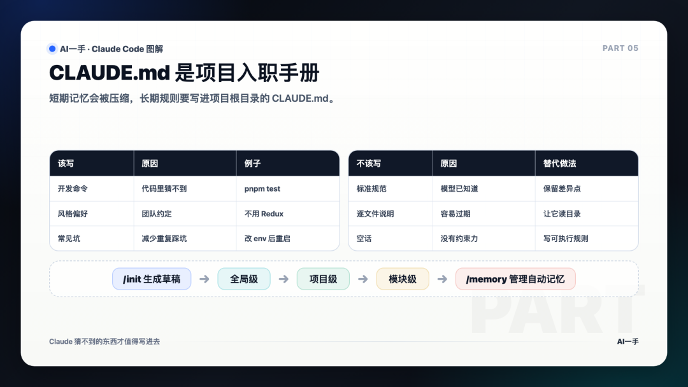
它是什么
CLAUDE.md 是一个 Markdown 文件，放在项目根目录。Claude Code 每次进入一个目录会自动读它，把它当作「这个项目的入职手册」。
该写什么
判断标准就一条。Claude 自己能从代码里读出来的，不要写。Claude 猜不到的，必须写。
一份够用的 CLAUDE.md 模板
# 项目名称
## 架构
- Next.js 15 + TypeScript + Tailwind CSS
- 数据库用 PostgreSQL + Drizzle ORM
- 状态管理用 Zustand（不要用 Redux）
## 开发命令
- 启动开发服务器 `pnpm dev`
- 跑测试 `pnpm test`
- 类型检查 `pnpm typecheck`
- Lint `pnpm lint`
## 代码风格
- 组件用函数式，不用 class
- 样式用 Tailwind，不要写 CSS 文件
- 错误处理用 error.tsx 边界
## 常见陷阱
- Drizzle 迁移后必须跑 pnpm db:generate，否则类型不同步
- 环境变量改了之后要重启 dev server
## 不要做
- 不要安装新依赖除非我明确同意
- 不要修改 drizzle.config.ts
整个文件不到 300 字，但每一行都有用。
层级覆盖
CLAUDE.md 有四个位置，优先级从低到高
全局级 ~/.claude/CLAUDE.md所有项目共用项目级 项目根目录 CLAUDE.md检入 Git，和团队共享模块级 子目录下的 CLAUDE.md，monorepo 里特别有用内联级 对话里用 @CLAUDE.md引用
就近覆盖。模块级会覆盖项目级，项目级会覆盖全局级。
顺带提一下 .claude/rules/ 目录。如果你的项目是 monorepo，不同子项目有不同的规则（前端用 Tailwind 不许写 CSS，后端用 Go 不许用泛型），可以在 .claude/rules/ 下按路径放规则文件。Claude 进入对应目录时自动加载对应规则，不需要你在一个 CLAUDE.md 里写一堆 if-else。
懒得写第一版？用 /init
在项目根目录跑 /init，Claude Code 会自动扫描代码、读取 README、推断技术栈，给你生成一份 CLAUDE.md 草稿。
但这只是起点。CLAUDE.md 的真正价值来自于迭代。Claude 犯一次错，你就加一条规则。三个月后那个文件就是你最有价值的 AI 资产。
Auto Memory，Claude 自己会记笔记
CLAUDE.md 是你写给 Claude 的。但 Claude 自己也会写。
Claude Code 有一个 Auto Memory 机制。它在工作过程中会把它认为重要的东西自动记下来，比如你项目的构建命令、你偏好的代码风格、它踩过的坑和解决方案。其中用户记忆存在 ~/.claude/CLAUDE.md 里（就是全局级那个文件），工程记忆存在./CLAUDE.md 里面，下次开新会话的时候自动加载。
你可能用了几天之后打开 ~/.claude/CLAUDE.md，发现里面多了一堆你没写的东西。不用慌，那是 Claude 自己记的。
输入 /memory 可以查看和编辑这些自动记忆。建议隔一阵看看，删掉过时的，保留有用的。
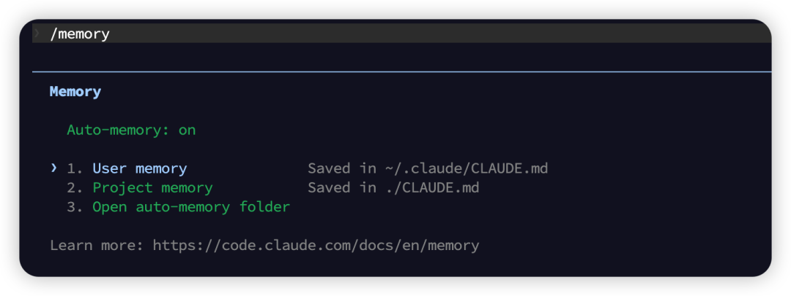
CLAUDE.md 是你给 Claude 的入职手册，Auto Memory 是 Claude 自己的工作笔记。两个配合起来，Claude 对你项目的理解会越来越深。
Part 6 Skills，让 Claude 记住你的工作方法
Skills 是什么
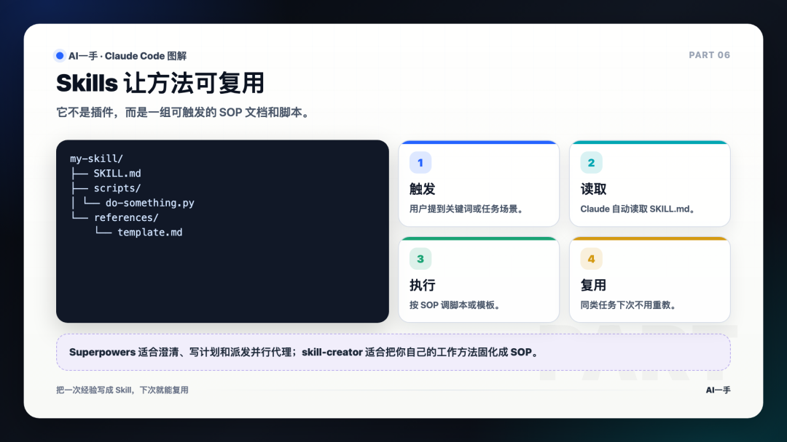
Skills 不是插件，是文档。
更准确地说，Skills 是一组 Claude Code 可以在特定场景下自动读取并执行的 Markdown 文件 + 脚本组合。它不像 MCP 那样要起服务，也不像 Prompt 那样要你每次手输。触发条件一到，Claude 自己读、自己用。
你可以把 Skills 理解成岗位 SOP 手册。今天你教过 Claude 怎么做「公众号文章排版」，明天他遇到这件事，不需要你重新教一遍。
一个 Skill 的标准结构
my-skill/
├── SKILL.md # 触发条件 + 执行说明
├── scripts/ # 可被调用的脚本
│ └── do-something.py
└── references/ # 参考资料、模板
└── template.md
SKILL.md 是入口。最简模板
---
name: my-first-skill
description: 在用户要求做 XX 的时候激活。触发关键词：关键词A、关键词B。
---
# 调用说明
当用户提到 [触发条件] 时，执行以下步骤
1. 读取 references/template.md 作为参考
2. 调用 scripts/do-something.py 跑流程
3. 把结果写到指定位置
两个安装位置
全局~/.claude/skills/ 所有项目都能用项目级你的项目/.claude/skills/ 只在这个项目里用
通用工作流放全局，项目专属逻辑放项目级。
装第一个 Skill 集合，Superpowers
Superpowers 是社区里最成熟的通用 Skills 集合。
/plugin marketplace add obra/superpowers-marketplace
/plugin install superpowers@superpowers-marketplace
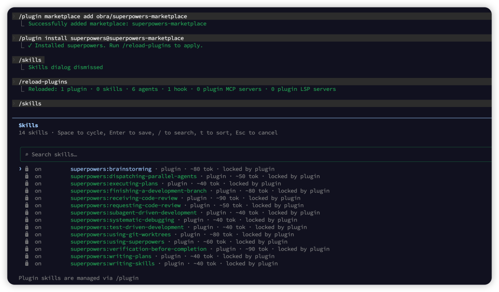
注意装完之后记得执行：/reload-plugins，这样你安装的skill才能显示出来。
装完你会多出来一批子技能。最实用的三个
brainstorming 你抛一个模糊需求，它反过来问你 5-8 个澄清问题，把任务边界全问清楚 writing-plans 把澄清过的需求落成一份结构化的 plan.md dispatching-parallel-agents 把一份 plan 拆给多个子代理并行跑
用 skill-creator 造自己的 Skill
这是最重要的。自己造 Skill。
先装官方插件市场
/plugin marketplace add anthropics/claude-plugins-official
然后装 skill-creator
/plugin install skill-creator@claude-plugins-official
装好后重新加载插件
/reload-plugins
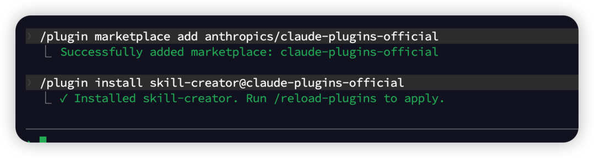
然后在 Claude Code 里输入 /skill-creator，选 Create 模式，它会带着你一步步设计出一个完整的 Skill。
我最建议你先造的 Skill 是「深度研究一个陌生领域」。因为这件事太高频了。老板提到一个新赛道，客户讲一个新概念，你第一反应是先搞懂它到底是什么。把调研流程封进 Skill 里，下次一个命令就能按标准流程跑完。
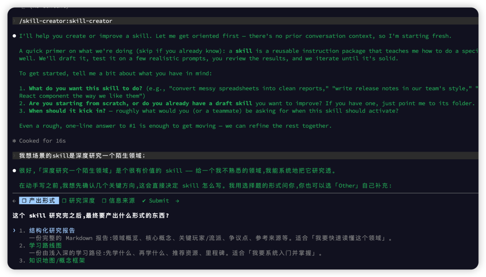
给你几个选项，你自己选择，最后提交。
写一个 Skill，就是在做一次知识结晶化。你过去积累的某种工作方法，现在变成了一份 Claude 能读懂的文件，可以被复用、被继承、被不断升级。
Part 7 Hooks，100% 确定执行的自动化
Skills 有一个天然的局限。它是对 Claude 的「建议」。Claude 会尽量遵守，但在长对话后期，它可能就忘了。
Hooks 解决的就是这个问题。Hooks 不是建议，是强制执行。
Hooks vs CLAUDE.md
CLAUDE.md 是通过自然语言影响 Claude 的行为。Claude 有时候会忘。
Hooks 是 Claude Code 平台层面的机制，在特定生命周期节点触发 Shell 脚本，Claude 无法跳过或忽略。
生命周期钩子
实际案例，自动格式化
每次 Claude 编辑文件后自动跑 eslint
// .claude/settings.json
{
"hooks": {
"PostToolUse": [
{
"matcher": "Edit|Write",
"command": "npx eslint --fix $CLAUDE_FILE_PATH"
}
]
}
}
你不需要自己手写 Hooks 配置。直接跟 Claude 说：
「帮我在当前项目的 .claude/settings.json 里添加一个 PostToolUse Hook：每次你使用 Edit 或 Write 修改文件后，自动对被修改的 JS/TS 文件执行 npx eslint --fix。要求用 jq 从 stdin 里读取 tool_input.file_path，只处理 .js、.jsx、.ts、.tsx 文件，不要影响其他文件。写完后告诉我怎么用 /hooks 验证。」，
它会帮你生成配置并写入 settings.json，并且验证成功。
PostCompact Hook，防止长对话失忆
长对话中 Claude 会压缩上下文来节省 Token，压缩后一些早期的重要指令可能丢失。PostCompact Hook 可以在压缩发生后自动把关键规则重新注入。
// .claude/settings.json
{
"hooks": {
"PostCompact": [
{
"command": "echo '关键提醒：1. 不要修改 drizzle.config.ts 2. 新依赖必须经过确认 3. 所有改动跑一遍 pnpm test'"
}
]
}
}
echo 输出的内容会被注入到压缩后的上下文里。你可以把项目里最容易被遗忘的规则塞进去。这比在 CLAUDE.md 里写「请务必记住」靠谱得多，因为 Hook 是平台层面强制执行的，Claude 想忘都忘不了。
Part 8 MCP，让 Claude 连接外部世界
Skills 教 Claude 怎么做事，Hooks 在关键节点自动执行检查，MCP 把外面的世界接进来。
MCP（Model Context Protocol）是 Anthropic 推出的开放标准，让 AI 工具能连接外部数据源和服务。把它想象成 Claude Code 的 USB 接口。
添加 MCP 服务器
claude mcp add slack -- npx -y @modelcontextprotocol/server-slack
添加后，Claude 就获得了 Slack 的能力，可以搜索消息、发送消息、创建频道。
常用 MCP 推荐
MCP 配置文件
MCP 的配置存在项目根目录的 .mcp.json 中，可以跟代码一起提交到 Git
{
"mcpServers": {
"slack": {
"command": "npx",
"args": ["-y", "@modelcontextprotocol/server-slack"],
"env": {
"SLACK_TOKEN": "${SLACK_TOKEN}"
}
}
}
}
注意，敏感的 Token 不要硬编码在 .mcp.json 里，用环境变量引用。
Skills vs Hooks vs MCP 三个概念的关系
三者不是替代关系，是协作关系。
Part 9 多 Agent 协作，一个人指挥一支 AI 团队
这是 Claude Code 跟普通对话工具拉开数量级差距的地方。
子代理（Subagents）
子代理是 Claude 替你启动的另一个 Claude。每个子代理有自己独立的 Context、独立的任务、独立的工作目录。
在 .claude/agents/ 目录下放一个 .md 文件，就定义了一个子代理
.claude/agents/
├── security-reviewer.md # 安全审查专家
├── code-simplifier.md # 代码精简专家
└── verify-app.md # 应用验证专家
子代理最重要的特性不是「专业分工」，而是独立上下文。每个子代理运行在自己的上下文窗口中，不消耗主会话的空间。
Git Worktrees，并行的基础设施
多个 Claude 实例同时在一个项目上工作，必须做好隔离，否则它们会互相覆盖文件。Git Worktree 就是干这个的。
claude --worktree
每次运行这个命令，Claude Code 会自动创建一个新的 worktree、切到一个新分支，在隔离环境中工作。完成后把分支合并回主分支。
加上 --tmux 参数可以在后台运行
claude --worktree --tmux
Agent Teams，让 Agent 自己协调
Agent Teams 是 2026 年 2 月发布的，目前是 Claude Code 最强大的协作模式。
核心思路很简单。不是你来协调多个 Agent，而是让 Agent 自己协调。
最经典的用法是 Writer/Reviewer 模式。一个 Agent 写代码，另一个 Agent 审代码，审完反馈给写的那个改，形成迭代循环。就像人类团队一样，写代码的人容易陷入自己的思路，审代码的人能从不同角度发现问题。
Agent View，管理多个会话
在终端里输入 claude agents，会打开一个统一的管理界面，列出所有正在运行的 Claude Code 会话。哪些在跑、哪些等你输入、哪些已经完成，一屏全看到。
claude agents 还支持一堆配置参数，比如 --add-dir 加额外目录、--model 指定模型、--permission-mode 设权限模式。如果你同时跑三四个会话，这个界面比在终端 Tab 之间切来切去舒服太多了。
并行工作的几条经验
从 2 个会话开始就好。 一个做主任务，一个做辅助的（写测试、做 code review）。等觉得顺手了再加。
每个会话给一个明确的角色。 不要让所有会话都做「随便什么任务」。角色越清晰，管理越轻松。
用 Git 分支隔离一切。 每个会话在自己的分支上工作，通过 PR 合并。千万不要让多个会话操作同一个分支。
定期扫一眼。 并行不等于不管。每隔 15-20 分钟看看各个会话的进度，及时纠偏。
Part 10 实战，用五步工作流跑一个真实任务
前面讲了这么多零件，这一节组装起来。
我把一个完整的 Claude Code 工作流抽象成五步
澄清 → 计划 → 分工 → 落盘 → 交付
用一个真实任务跑一遍。假设任务是「2026 年主流 AI 编程工具横评报告」。
第一步，澄清
先建一个工作区文件夹 ai-tool-2026/，用 IDE 打开，在终端里启动 claude。
激活 Superpowers 的 brainstorming
/brainstorming
整理一份 2026 年主流 AI 编程工具报告 。
对象包含 Claude Code、codex、Cursor、GitHub copilot、windsurf。
最终交付物是一份带封面、横评矩阵、推荐路径的 PDF。
帮我先把细节澄清清楚。
Claude 会反过来问你 5-8 个问题。评分维度是什么？读者是谁？篇幅要求？引用规范？
挨个回答。这一步看起来在浪费时间，实际上是在替你把后面所有的返工预先消除掉。
第二步，计划
/writing-plans
按照刚才澄清的所有信息，在当前目录生成一份 plan.md。
要求 plan.md 给人看和给子代理看都能看懂。
有目标、有分工、有交付物、有验证标准。
它会产出一份 plan.md。你审一遍，觉得对了再往下走。
第三步，分工
/dispatching-parallel-agents
基于当前目录的 plan.md，启动三个子代理并行跑。
子代理 1（researcher）：
对 5 个工具按 5 个维度收集公开资料，写到 research/<tool-name>.md
子代理 2（fact-checker）：
复核 researcher 的事实和来源，有问题写到 issues.md
子代理 3（report-writer）：
等复核完成后，把所有素材按 plan.md 的结构整合到 report.md
三个子代理同时跑，你坐在中间看进度就行。
第四步，落盘
researcher 每查到一条资料，强制要求把出处链接写进 sources.md。这在 plan.md 里就应该写死「所有事实陈述都有可点击的来源链接」。
所有中间产物都进文件。plan.md、research/、sources.md、issues.md。可追溯、可复用。
第五步，交付
report.md 整合完后，产出最终交付物。
把当前目录下的 report.md 转成一份 PDF。
风格是专业横评报告，封面深色 + 大字标题。
内页浅色背景 + 衬线正文。
整个项目跑完之后，工作区文件树长这样
ai-codetool-2026/
├── CLAUDE.md
├── plan.md
├── sources.md
├── issues.md
├── research/
│ ├── claude-code.md
│ ├── cursor.md
│ ├── codex.md
│ ├── github-copilot.md
│ └── windsurf.md
├── report.md
└── report.pdf
Part 11 命令速查表
截图存手机，前两周高频用得上。
/status | |
/context | |
/clear | |
/compact | |
/init | |
/cost | |
/model | |
/permissions | |
/config | |
/btw | |
/doctor | |
/recap | |
/goal | |
/team-onboarding | |
/voice | |
/ultraplan | |
/ultrareview | |
/memory | |
/loop | |
ultrathink | |
claude -p | |
Shift+Tab | |
Esc | |
Esc × 2 | |
@文件名 | |
!命令 |
Part 12 五个最常见的坑，提前避掉
会话拖太久，Context 满了 Claude 开始忘事。解法是 Token 用到 50% /compact，70% /clear。
坑二，没 Plan 直接 Auto
任务复杂的时候不用 Plan Mode 直接放它跑，出错率指数级上升。80% 的任务都应该在 Plan Mode 跑。
坑三，没写 CLAUDE.md
每次新会话都要从头解释项目。进项目第一件事 /init 生成 CLAUDE.md，然后持续迭代。
坑四，一个会话塞太多事
修 bug、加功能、重构代码、写文档全在一个会话里做。Context 被塞满，每个任务的理解都很浅。一个会话聚焦一件事，做完 /clear。
坑五，看着对就接受了
Claude 写了一大堆代码，看着合理就接受了，没实际跑一下。每一轮改动都实际运行一次验证。「代码看起来对」和「代码是对的」差距很大。
Part 13 进阶技巧
/goal，设个目标让它自己跑到完
这是 2026 年加的最实用的命令之一。
以前你给 Claude 布置任务，它跑完一轮就停下来等你确认。如果任务涉及多轮操作（跑测试、改代码、再跑测试），你得一直在旁边盯着点确认。
/goal 改变了这个模式。你设一个完成条件，Claude 会一直跑，直到一个独立的评估模型确认条件满足了才停。
/goal 所有 test/auth 目录下的测试通过，lint 检查也是干净的
设完目标之后你可以去倒杯咖啡。回来的时候要么测试全绿了，要么它会告诉你卡在哪里。
适合那种「反复跑测试 → 改代码 → 再跑」的循环任务。不适合需要你中途做决策的任务。
/recap，中断后无缝接上
写代码经常被打断。开了一个 Claude Code 会话写到一半，去开会了，回来忘了刚才做到哪了。
/recap 就是干这个的。它会总结当前会话的上下文，告诉你进行到哪一步、做了什么、还剩什么没做。你也可以在 /config 里设置自动 recap，每次回到会话自动触发。
让 Claude 先问你问题再动手
当你要做一个比较大的功能，不要一上来就写需求文档。先这样说
我要给博客加一个评论系统，在动手之前，先问我所有你需要搞清楚的问题。
Claude 会问你一系列问题，至少有一半是你自己没考虑过的。问完让它整理成 Spec 文档，然后开一个新会话，把 Spec 喂给新的 Claude 来执行。
为什么开新会话？因为问答过程积累的对话历史已经很长了，占了大量上下文。新会话从一份干净的 Spec 开始，Claude 能更专注地执行。
Computer Use，Claude 能看到你的屏幕了
Claude Code 的 Computer Use 功能让 Claude 直接看到你的屏幕截图，然后操控鼠标和键盘。零配置，Pro 和 Max 用户自动可用。
看一下我屏幕上的这个页面，告诉我布局有什么问题
在浏览器里打开 localhost:3000，走一遍注册流程，看看有没有 bug
现阶段 Computer Use 最好的定位是，把它当成一个耐心但手速慢的测试员。给它那些「按固定流程重复操作」的任务，它做得很好。需要快速反应的，还是自己来。
Voice Mode，按住空格说话
在 Claude Code 里输入 /voice 就进入语音模式。支持中文。按住空格键说需求，松手发送。
最舒服的场景是脑暴的时候。想法冒得比打字快，一口气倒给 Claude，让它帮你理成结构化的需求。
/permissions 精细控权限
/permissions
预先允许 Claude 执行某些操作，不用每次都点确认
Bash(npm run *)
Bash(npx vitest *)
Bash(git add *)
Bash(git commit *)
Edit(/docs/**)
这些规则会保存到 .claude/settings.json，可以提交到 Git 和团队共享。
Ultrareview，合并代码前让 AI 先审一遍
你写了一个大功能，准备合并到主分支。自己看了一遍觉得没问题，但总有点不放心。
/ultrareview
Claude 会在云端启动一组 reviewer Agent，对你当前分支的改动做全面排查。不是检查代码风格那种表面活，是找真 bug。每个发现都会独立复现和验证，确认是真问题才报给你。
跑一次大概 5-10 分钟，后台执行不影响你继续工作。也可以指定 PR 编号
/ultrareview 42
Pro 和 Max 用户有免费额度，用完后按次计费，一次大概 $5-20 取决于改动的规模。和 Ultraplan 一样，用第三方 API 的时候不支持。
Extended Thinking 和 Fast Mode，调深度的两个开关
Claude Code 默认的思考深度对大部分任务够用了。但有两个极端情况。
任务特别复杂的时候，比如跨多个文件的架构重构，你希望 Claude 想得更深。在 Prompt 里加上 ultrathink 这个关键词，或者用 /config 里的 thinking 设置开到最高。Claude 会花更多时间做内部推理，回答质量明显上升，但速度会慢、Token 消耗会大。
任务特别简单的时候，比如改个变量名、加个注释，你不需要 Claude 深度思考。打开 Fast Mode（在 /config 里切换），Claude 会跳过深度推理直接给结果。快很多，但推理质量会降。
简单说就是 ultrathink 让它想得更透，Fast Mode 让它跑得更快。根据任务复杂度选。
Headless 模式，把 Claude Code 接入脚本和 CI/CD
前面讲的所有用法都是你坐在终端前跟 Claude 对话。但程序员经常需要把工具接进自动化流程，比如 CI 管道、定时任务、shell 脚本。
claude -p 就是干这个的。-p 是 print 模式，Claude 接收输入、跑完任务、输出结果，不需要你交互。
echo "检查这个文件有没有安全漏洞" | claude -p --file src/auth.ts
还可以要求 JSON 格式输出，方便下游脚本解析
claude -p "列出所有 TODO 注释" --output-format json
几个实用场景。在 GitHub Actions 里跑自动 code review。在 pre-commit hook 里检查代码规范。写个脚本批量处理多个文件。
注意 2026 年 6 月 15 日开始，claude -p 的用量会从订阅额度中独立计费，Pro 用户每月 $20 额度，Max 用户按对应倍数。
/loop，让 Claude 定时自动跑任务
/loop 每30分钟跑一次 npm test，如果有失败的测试就修复它
Claude 会按你设定的间隔循环执行任务。适合那种「我不想一直盯着，但需要持续关注」的场景。比如写一个爬虫，让 Claude 每隔一段时间检查一次数据格式有没有变，变了就自动修。
也可以设一次性提醒
/loop 2小时后提醒我检查部署状态
结尾
Claude Code 确实是 2026 年最值得学的工具。
但工具永远只是工具。Claude Code 解决了「怎么做」的问题，但「做什么」和「做得好不好」还是要靠你自己的判断。
这篇教程覆盖了从安装配置到多模型切换、从 Skills/Hooks/MCP 到 Ultraplan/Ultrareview、从单人操作到多 Agent 协作的全部环节。你不需要一次学完，照着做，一步一步来，每跑通一个环节就往下走一步。
现在打开终端，输入 claude，开始你的第一个任务吧。
好了，感谢你的耐心观看。
如果觉得不错，希望能点个赞、转发、收藏三连吧。
如果想第一时间收到推送，也可以给我个星标⭐，我们，下次再见。